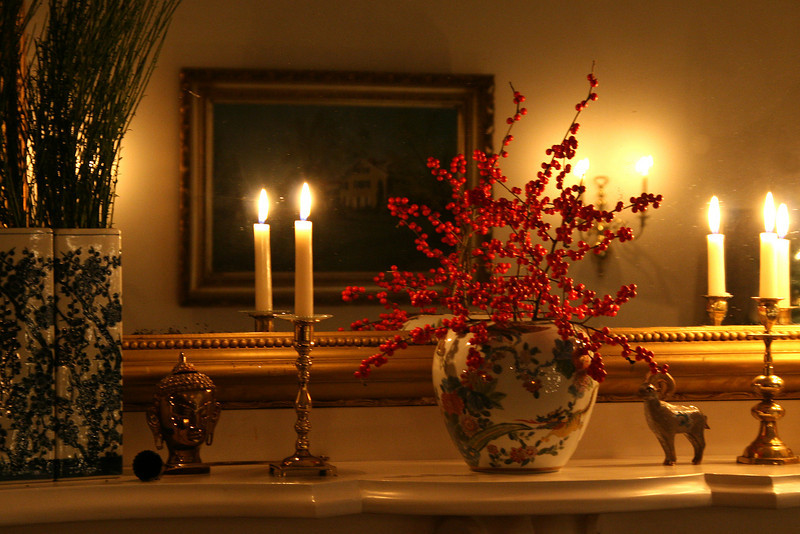

Christmas in Odessa is a self-guided walking tour of private homes and public buildings, many dating from the 18th and 19th centuries, decorated for the holidays. The tour will take place on December 6, 2014 from 10:00 a.m. to 7:00 p.m. In addition to the house tour, we have many special events which are included in the ticket price.
The first Christmas in Odessa was born 50 years ago as a fund raiser for the Women's Club of Odessa. Our purpose was to fund college scholarships for local high school seniors. With the help and cooperation of Odessa homeowners, we have provided scholarships to more than 100 students. In addition, we have been able to contribute to many worthwhile community groups and projects. We are proud to make these contributions to our community, and we are fortunate to have the support of the many fine people who have encouraged us through the years.
Tickets are $20.00 if purchased on the day of the tour. Children ages 6 to 12 are $5.00, and under 6 years old are free. Tickets can be purchased at the Old Academy at the intersection of 4th and Main Street in Odessa.
Click here to purchase advance tickets online. Advance tickets are $15.00. If ordering by mail, send a SASE with either a personal check or money order. We cannot accept credit cards by mail. Make checks payable to The Women's Club of Odessa. We will send tickets for all requests received by November 15th. Checks received after November 15th will be returned. Our mailing address is
Christmas In Odessa Tickets
Women's Club of Odessa
P.O. Box 254
Odessa, Delaware 19730
(302) 378-4900
Tickets may also be purchased in advance at the Historic Odessa Foundation Visitors Center Tuesday through Saturday, 10:00 a.m. to 4:00 p.m.; Sunday from 1:00 p.m. to 4:00 p.m. You can also purchase tickets at Hatton's Watch and Repair on Main Street in Middletown Thursday and Friday from 9:00 a.m. to 5:30 p.m.; Saturday 9:00 a.m. through 1:00 p.m.
Tickets go on sale November 1.
We have a wonderful Women's Club Christmas Craft Shop in the Appoquinimink Training Center, 118 South 6th Street, Odessa from 9:30 a.m. until 5:00 p.m. Parking is available via Route 13 South.
We also sell freshly cut greens at the barn behind the Wilson-Warner House with demonstrations on wreath making and flower arrangements using the greens. White Pine, Magnolia, and Scotch Broom greens will be available this year.
The expanded Antique Shop will be in the Odessa Fire Hall on Main Street in Odessa from 9:30 a.m. to 5:00 p.m.
No tickets are required to any of these special events, so please come by!